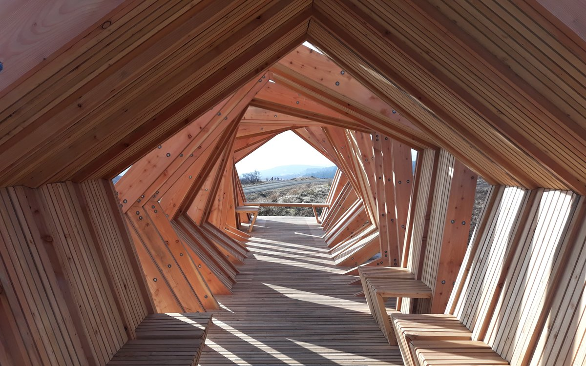
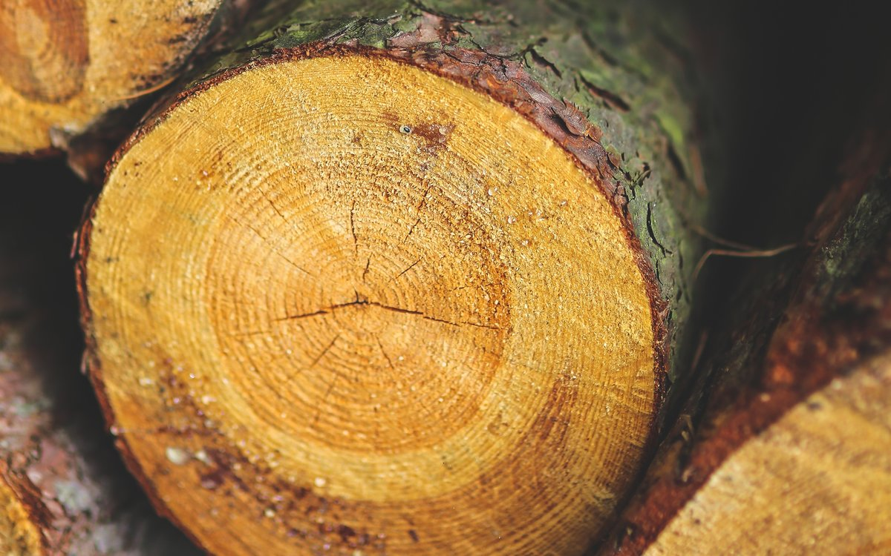
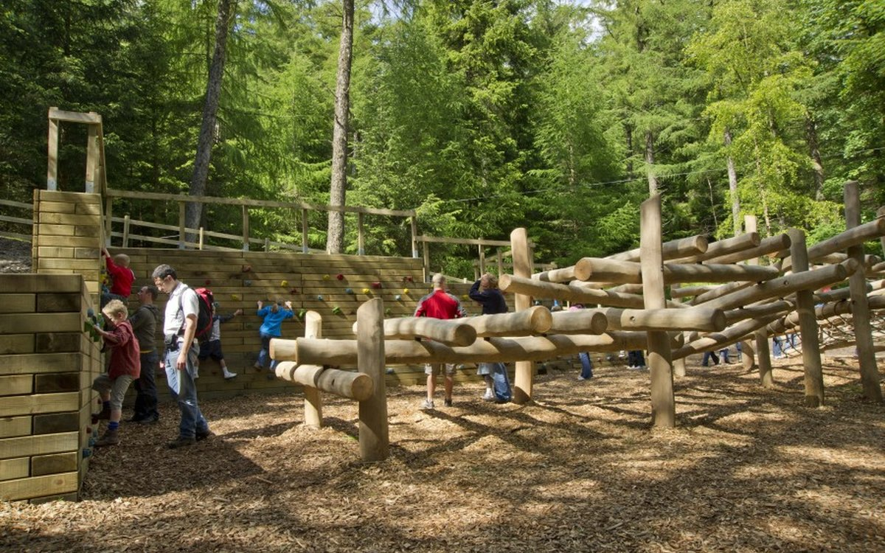
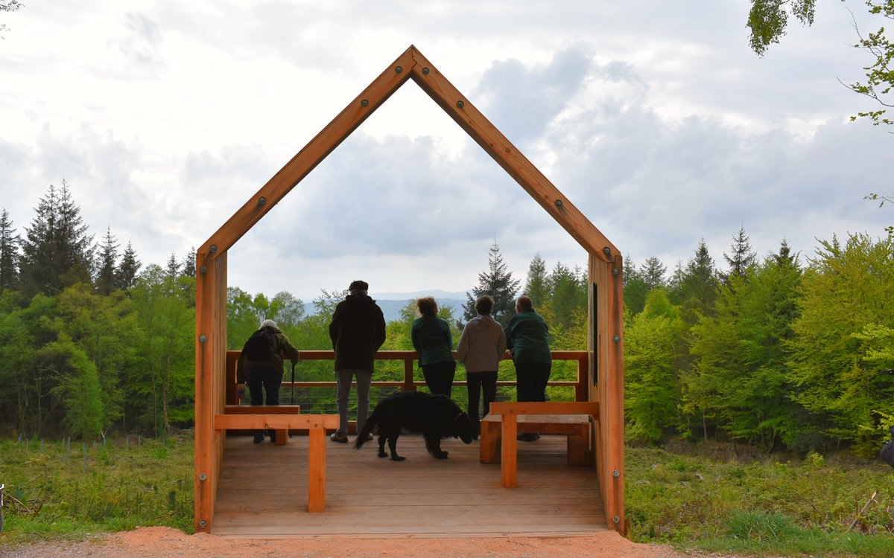

Beautiful, strong and renewable; wood is an extraordinary natural material with endless uses. Wood products can have a long life and are often reused or recycled again and again. When we harvest trees for wood, we plant more to ensure the forest’s lifecycle continues.
Growing and using wood helps to tackle the climate crisis. As trees grow, they remove carbon dioxide from the air and convert it to wood. For every one cubic metre of wood grown, roughly one tonne of carbon dioxide is taken out of the atmosphere by the tree.
Timber is also a low-carbon alternative to materials such as plastic, concrete and steel. These materials require lots of energy to be produced, emitting carbon dioxide when they are made. However, timber production and processing is highly energy efficient.


Timber is classed as either softwood or hardwood, depending on the type of tree the timber comes from. Timber from hardwoods tends to be more dense than softwoods, though there are exceptions.
Softwoods come from coniferous trees such as pine, fir, spruce and larch. These trees take around 40 years to grow before they are ready to harvest.
Hardwoods come from broadleaved trees such as oak, ash and beech. These trees take much longer to grow, up to 150 years before they are ready to harvest.
Every part of a tree can be used to make different products at the sawmill. The parts we leave behind rot down to create soils that feed the next generation of forests.
The trunk of the tree is sawn into pieces to make beams, planks and boards. These are used in construction work, such as timber framed buildings, fencing and floorboards, in furniture or made into pallets.
Branches, tops of trees and smaller trees can be used as wooden posts, or are chipped and pressed to make manufactured boards. These boards are used for flooring, roofing, partitions and flat-pack furniture. This wood can also be pulped to make paper and cardboard and made into anything from newspapers, books, packaging, stationery, wallpaper, kitchen towel or toilet paper.
Bark and other parts left over are used as woodfuel, chippings for playgrounds and mulch for gardens. Even the sawdust and wood shavings, by-products from the sawmill, are also put to use as animal bedding or pressed into wood pellets for fuel to make sure nothing is wasted.


Harvesting wood is good for forests. It ensures they are well looked after and increases their value to society. We manage our forests to balance the benefits they offer by providing habitats for wildlife to thrive and spaces for people to enjoy.
Well-managed forests can last forever. We monitor them to spot early signs of disease or damage and take action to make sure our forests are healthy.
We put sustainability at the heart of what we do. We achieve the UK Woodland Assurance Standard (UKWAS) and are the largest supplier of homegrown Programme for the Endorsement of Forest Certification and Forest Stewardship Council® certified timber in England. Our government were the first in the world to get all public forests FSC®-certified, earning us the WWF’s highest environmental award 'Gift to the Earth'.
When you're shopping for wood and paper products, always make sure to look for the FSC® or PEFC logos to know they come from forests, like ours, that are managed sustainably for the future.